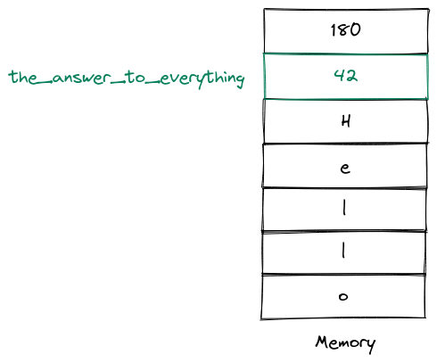

Chapter 2. Variables, data types and operators
Contents
Chapter 2. Variables, data types and operators#
Variables#
We already managed to successfully print Hello, World! to the console in a daring feat. But of course just printing Hello, World! isn’t very useful and in most real-world programs we will usually work with more complex data, that we need to manipulate. This requires us to store this data somewhere for later use.
Variables allow us to do exactly that. Put simply, a variable is a value paired with a symbolic name that can be used to access that value.
For example, we could store the value 42 somewhere in our memory and pair it with a symbolic name like the_answer_to_everything:

Now we can access the value we just stored using the symbolic name the_answer_to_everything. We say that the variable the_answer_to_everything has the value 42.
The big advantage of having this symbolic name, is that even if its value changes, the symbolic name stays the same. For example let’s say that the answer to everything becomes 43 instead of 42 and the variable the_answer_to_everything now has the value 43:

Now if we access the variable somewhere from our program, we automatically get the new value. Therefore variables allow us to store and change data in a meaningful way. This is something we will do all the time so let’s create and change some variables!
We create a variable in Python and assign a value to it using the assignment operator =:
the_answer_to_everything = 42
This creates a value the_answer_to_everything which has the value 42. Do note that unlike in mathematics the statement the_answer_to_everything = 42 doesn’t mean that my_variable should be equal to 42. Instead = tells the Python interpreter to take the value on the right side and assign it to the variable on the left side. The assignment operator = has nothing to do with the = operator that you know from mathematics.
For example a statement like x + 2 = 4 which is totally sensible when doing math, has no meaning when writing code since x + 2 is not a valid variable name. In fact this is what will happen if you try to do that:
x + 2 = 4
Cell In[2], line 1
x + 2 = 4
^
SyntaxError: cannot assign to operator
A SyntaxError means that we supplied Python with an expression it doesn’t understand. Quite helpfully it tells us, which operator (==) we probably meant to use - we will come back to this in a few minutes.
Just like we executed print("Hello, World!"), we can print a variable in a human-readable way using print:
print(the_answer_to_everything)
42
As you can see, print outputs the value of the variable (which is 42 in this case), not its name.
Alternatively, we can get the representation of the variable in a REPL by just providing the variable name to the REPL. This is quite similar to how got the representation of "Hello, World!" in the last chapter:
the_answer_to_everything
42
Once a variable is declared, you can assign a new value to it later:
the_answer_to_everything = 42 # declare the variable
the_answer_to_everything = 43 # assign a new value to the variable
Now the_answer_to_everything has the value 43 instead of 42. However the symbolic name didn’t change, only the value of the variable did. This means that we can still access the value using the_answer_to_everything. It’s just a different value now:
the_answer_to_everything
43
Data types#
The data type of a variable describes the possible values and allowed operations on a variable. For example if a variable is an integer, it can take integers and you can perform operations like addition, subtraction, multiplication, division etc.
Python has four built-in data types that are of particular importance to us right now - namely the integer data type (int for short), the floating point data type (float for short), the boolean data type (bool for short) and the string data type (str for short). Let’s have a look at these data types one by one.
The integer data type is capable of representing - well - integers (completely unexpected). For example, the following variables all have the integer data type:
drinking_age = 18
winter_temperature_celsius = -30
game_score = 120
Let us verify that these variables all have the integer data type using type which shows the data type of a variable:
type(drinking_age)
int
type(winter_temperature_celsius)
int
type(game_score)
int
All three lines output int which means that the respective values indeed all have the data type integer.
The floating point data type is capable of representing - well - floating point numbers (this book is just full of surprises). Floating point numbers are essentially approximations of real numbers. The reason they are only approximations is not because of Python, but because of the limitations of something all mathematicians really hate - reality.
Real numbers can have arbitrary precision after all - some real numbers have an infinite amount of digits after the decimal point. But of course such numbers cannot be represented accurately by our hardware. After all, we do not have an infinite amount of memory space. In fact the amount of memory available to a single floating point number is usually very finite.
Here is an example of a floating point variable:
fastest_sprint = 9.58
We can again verify that fastest_sprint is a floating point variable using type:
type(fastest_sprint)
float
The fact that floating point numbers are only approximations of real numbers has important consequences in the real world. For example if we try to add 0.1 and 0.2 we get a surprising result:
0.1 + 0.2
0.30000000000000004
We will not concern ourselves with the gritty details of floating point representation in this chapter. Just remember that working with floating point numbers can (and will) be inaccurate. This is also the reason why programmers strongly prefer representing values as integers and only fallback to floating point numbers if they have absolutely no other choice. For instance, if you need to store the amount of money in a bank account you should store it in cents (e.g. 15673 cents) instead of in dollars (e.g. 156.73 dollars).
Another important data type is the bool data type. A boolean variable can store the two values True and False:
this_is_a_great_book = True
german_weather_is_generally_sunny = False
Boolean values are not particularly useful on their own. However they will become extremely important when writing conditional tests and generally performing things depending on the outcome of certain logical operations.
The final data type we will look at in this chapter is the string data type. A string is just a sequence of characters. When writing strings, they go between double quotes or between single quotes:
my_name = "Max Mustermann"
my_name
'Max Mustermann'
my_country = 'Germany'
my_country
'Germany'
There is no strong convention on Python regarding the use of single or double quotes. The general advice is to pick one and stick to that in your codebase. Within this particular book we will use double quotes.
Something you should try from time to time is to see what happens if you make a specific mistake on purpose. That way when you see that mistake later in a more complicated codebase you will already know what to do. For example, what happens if we forget the quotes in a string?
my_country = Germany
---------------------------------------------------------------------------
NameError Traceback (most recent call last)
Cell In[17], line 1
----> 1 my_country = Germany
NameError: name 'Germany' is not defined
We get a NameError: name 'Germany' is not defined. This is because in this example the interpreter thinks that Germany is supposed to be the symbolic name of a variable (as the quotes are missing). Since we did not declare a variable Germany, Python raises a NameError telling us that there is no variable with the name Germany.
This is very important to keep in mind - if you write a sequence of characters without quotes, the Python interpreter will think that the sequence of characters represents a variable name:
the_answer_to_everything = 42
# Python assumes that this sequence of characters represents the variable the_answer_to_everything.
# Accordingly outputting or accessing the variable will output or access its value
# which in this case is 42.
# vvvvvvvvvvvvvvvvvvvvvvvvvvvvvvvvvvvvvvvvvvvvvvvvvvvvvvvvvvvvvvvvvvvvvvvvvvvvvvvvvvvvvvvvvvvvvvvvvvv
the_answer_to_everything
42
However if you write a sequence of characters with quotes, the Python interpreter will think that the sequence of characters represents a string value:
# Python assumes that this sequence of characters represents the string with the value "the_answer_to_everything".
# Accordingly outputting or accessing the variable will output or access its value
# which in this case is "the_answer_to_everything".
# vvvvvvvvvvvvvvvvvvvvvvvvvvvvvvvvvvvvvvvvvvvvvvvvvvvvvvvvvvvvvvvvvvvvvvvvvvvvvvvvvvvvvvvvvvvvvvvvvvvvvvvvvvvvvvv
"the_answer_to_everything"
'the_answer_to_everything'
Sometimes you want to include the value of variables in strings. You can do this using a so called format string. In order to construct a format string, you prefix the string with f and put the variables inside square brackets {}:
the_answer_to_everything = 42
quote = f"The answer to the universe and everything is {the_answer_to_everything}"
quote
'The answer to the universe and everything is 42'
Operators#
Equality operators#
Every data type has associated operators. An operator takes one or more values and produces a result.
Two important operators we can perform on variable of essentially every data type are == (equals) and != (not equals). Consider the following variables:
x = 2
y = 4
z = 2
The variables x and z have the same values, while the variable x and y have different values. Therefore the equality operator produces the following results:
x == y
False
x == z
True
y == z
False
The “not equals” operator produces the opposite results:
x != y
True
x != z
False
y != z
True
So far, so obvious. But what about this?
42 == "42"
False
The reason == outputs False here is because 42 is the integer 42, while "42" is a string with the content 42. These are two completely different things! In general in Python a string will never be equal to an integer. Generally speaking, if two values have a different data type, they will rarely be equal.
The most prominent exception to that rule is that floating point numbers are equal to integers if they have the same value:
42 == 42.0
True
Arithmetic operators#
You can also use the usual arithmetic operators +, -, * and / on integers and floats. Unless you slept through school, you probably already know what they do, so here are some examples:
42 + 43
85
42 - 43
-1
42 * 43
1806
42 / 43
0.9767441860465116
Note that +, - and * will always return an integer, but / will always return a float (even if there would be no remainder).
42 / 1
42.0
type(42 / 1)
float
Do note that if we apply one of these operations on two floating point numbers, we get another floating point number. This holds true, even if the result could be represented as an integer:
type(42.0 + 43.0)
float
So far, so (relatively) obvious. But what happens if we try to add a float and an int? Python supports mixed arithmetic. If we perform an arithmetic operation with float and an int the result will be a float:
x = 42
y = 43.5
x
42
y
43.5
type(x)
int
type(y)
float
x + y
85.5
type(x + y)
float
Finally we should mention that if you attempt to divide by 0, Python will get very mad at you:
42 / 0
---------------------------------------------------------------------------
ZeroDivisionError Traceback (most recent call last)
Cell In[45], line 1
----> 1 42 / 0
ZeroDivisionError: division by zero
We will later learn how we can handle errors like that. For now just don’t divide by 0.
Two other important operators are the % (modulo) and // (floor division) operator. These return the integer quotient and remainder of a division respectively. For example 63 / 42 is 1 with remainder 21. Therefore:
63 // 42
1
63 % 42
21
Finally, Python also has the exponentiation operator **:
2 ** 3
8
All the operators we just introduced have so-called in-place equivalents which perform the operation and an assignment. For example instead of writing x = x + y you can write x += y.
Here are a few examples:
x = 42
y = 43
x += y
x
85
x = 42
y = 43
x *= y
x
1806
x = 2
y = 3
x **= y
x
8
Comparison operators#
Python also has comparison operators <, <=, >, >=, which work pretty much the way you would expect:
x = 42
y = 43
x < y
True
x <= y
True
x > y
False
x >= y
False
Using the operators on strings#
Something that might be surprising to learn is that we can use all of these operators with strings. However in this context the operators take different meanings. The + operator becomes string concatenation:
my_str = "Hello, "
other_str = " World!"
my_str + other_str
'Hello, World!'
The * operator becomes string repetition:
my_str = "Hello "
my_str * 3
'Hello Hello Hello '
We can use the == and != operators on strings:
"Hello" == "Hello"
True
Note that two strings only compare equal, if all characters are equal (including whitespace characters). For example the string "Hello" will not be equal to the string "Hello " (with a whitespace at the end).
"Hello" == "Hello "
False
Interestingly enough we can even use the comparison operators, which compares the strings lexicographically. Every character of string is compared alphabetically until we find two characters that aren’t equal:
"a" < "b"
True
"aa" < "ab"
True
Don’t spend too much time worrying about this - you will rarely use <, <=, > and >= to compare strings. We mostly mention this for the sake of completeness.
Logical operators#
Finally, we need to mention the logical operators and, or and not which take boolean values.
The and operator takes two boolean values and returns True if and only if they are both True:
False and False
False
False and True
False
True and False
False
True and True
True
The or operator takes two boolean values and returns True if at least one of the two values is True:
False or False
False
False or True
True
True or False
True
True or True
True
The not operator takes a single boolean value and returns the negation:
not False
True
not True
False